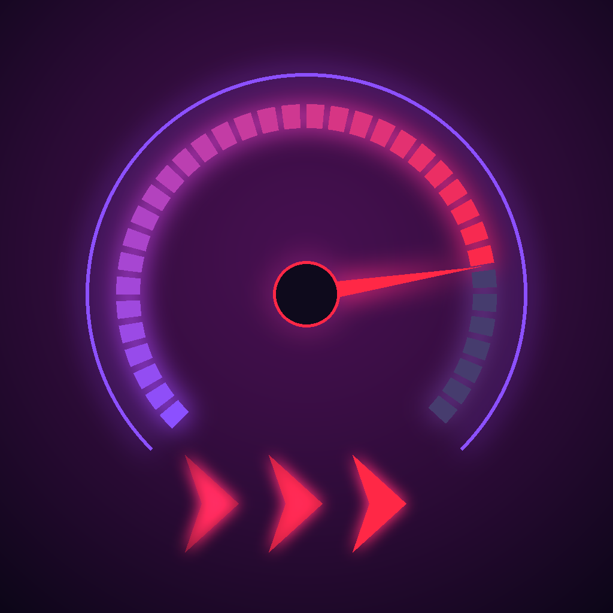
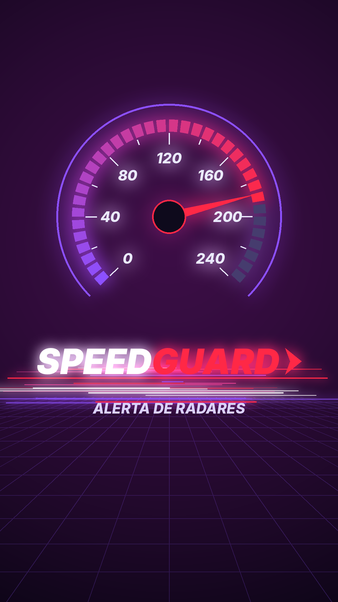

SPEEDGUARDO SpeedGuard avisa por voz e vibração a partir de 1000 metros antes de radares fixos, de semáforo e móveis — no mundo todo, inclusive por cima do Google Maps e do Waze.

COMO FUNCIONA
Com o caminho livre, as 6 faixas ficam verdes. A partir de 1000 m do radar, uma faixa acende em vermelho a cada aviso (1000, 800, 500, 400, 300 e 100 m), de baixo para cima, junto com o aviso de voz ou bipe. Aparecem a placa do limite, a distância e o tipo de radar. Se você estiver acima do limite, o app pede: "Reduza a velocidade".
Só são avisados os radares à frente — e, quando o sentido do radar é conhecido, só para quem vai naquele sentido.
RECURSOS
Avisos em 1000, 800, 500, 400, 300 e 100 m com vibração — o primeiro já fala o limite do radar. Escolha voz completa, bipe cada vez mais agudo ou modo discreto (só a distância).
Fica por cima do Google Maps e do Waze com velocidade, faixas e placa. Vertical ou horizontal, em três tamanhos. Toque duplo abre o app.
Radares do OpenStreetMap num raio de 30 km, atualizados a cada 6 h ou 15 km rodados, e guardados para uso sem internet.
Radares e avisos reportados aparecem para todos. Cards mostram quantas pessoas estão conectadas no mundo e no país onde você está.
Fila, acidente, obras, perigo e polícia com um toque. Cada aviso vale 6 horas e some sozinho; repetir no mesmo lugar renova, sem duplicar.
Digite o destino e escolha Google Maps ou Waze. O SpeedGuard liga o monitoramento sozinho e o painel avisa por cima da rota.
No botão Opções, ligue ou desligue radares fixos, de semáforo, móveis, filas, acidentes, obras, perigos e polícia. O que está desligado não avisa.
Seis cores, modo claro, escuro ou automático, e ícone de seta, carro, caminhão ou moto girando com a direção.
O país é detectado pelo GPS e o app se adapta: desliga os alertas onde a lei proíbe e avisa onde há restrições.
VÍDEO TUTORIAL
Vídeo narrado mostrando como configurar e usar o app. Ele também está dentro do app, em Configurações → Tutorial, e funciona sem internet.
PASSO A PASSO
Siga os passos na ordem na primeira vez. Depois, basta tocar em INICIAR antes de sair.
Baixe o APK no GitHub (Actions → Build APK → última execução → Artifacts → SpeedGuard-apk), abra o arquivo no celular Android e permita instalar de fontes desconhecidas quando pedir.
Permita a localização (inclusive em segundo plano) e as notificações. Sem elas o app não consegue avisar com a tela apagada.
O app baixa os radares num raio de 30 km (um símbolo gira ao lado da velocidade) e mostra "N radares carregados". A notificação "SpeedGuard ativo" indica que o monitoramento está ligado. PARAR desliga.
Em Configurações → Alertas sonoros: Voz ("Radar fixo a 1000 metros. Limite 80."), Bipe ou Modo discreto. Os bipes só abaixam a música por um instante.
Configurações → Bolha flutuante, permita "Sobrepor a outros apps" e escolha tamanho e formato. Toque em INICIAR e abra o Maps ou Waze: o painel aparece no canto e pode ser arrastado. Para fechar, toque no ✕ ou segure o dedo sobre ele por meio segundo.
Toque em Navegar (ao lado de Opções), digite o destino e escolha Google Maps ou Waze. Se o monitoramento estiver parado, o SpeedGuard liga sozinho antes.
No botão de reportar (ou no + do painel), toque na placa do limite — 30 a 130 ou "?" — e pronto: um toque salva, sem digitar. Acima das placas estão Fila, Acidente, Obras, Perigo e Polícia. Peça só ao passageiro, ou faça parado.
Radar móvel com mais de 48 h? Ao passar a menos de 150 m aparece "O radar móvel ainda está aqui?". Sim mantém por mais 48 h; Não apaga para todos.
O botão ao lado de Configurações alterna entre Mapa e Tela de alerta. Em Opções, escolha as camadas; em Configurações, cor, aparência e ícone no mapa. Para ver outra região, arraste o mapa e aproxime.
REGRAS POR PAÍS
O SpeedGuard detecta o país pelo GPS e muda o comportamento automaticamente. Confira sempre a lei do lugar onde você dirige.
| País | Comportamento |
|---|---|
| Suíça | Alertas desligados (proibido por lei) |
| Alemanha | Funciona, com aviso de que só passageiros podem usar |
| França | Modo completo — atenção: usar ao dirigir um app que mostra a posição exata dos radares é infração (art. R413-15 do Code de la route) |
| Demais países | Modo completo |
LEIA-ME
Feito em Flutter. O APK é compilado automaticamente pelo GitHub Actions a cada atualização. Código, histórico de versões e README completo no repositório do GitHub.
Baixe o SpeedGuard e ative em menos de um minuto.